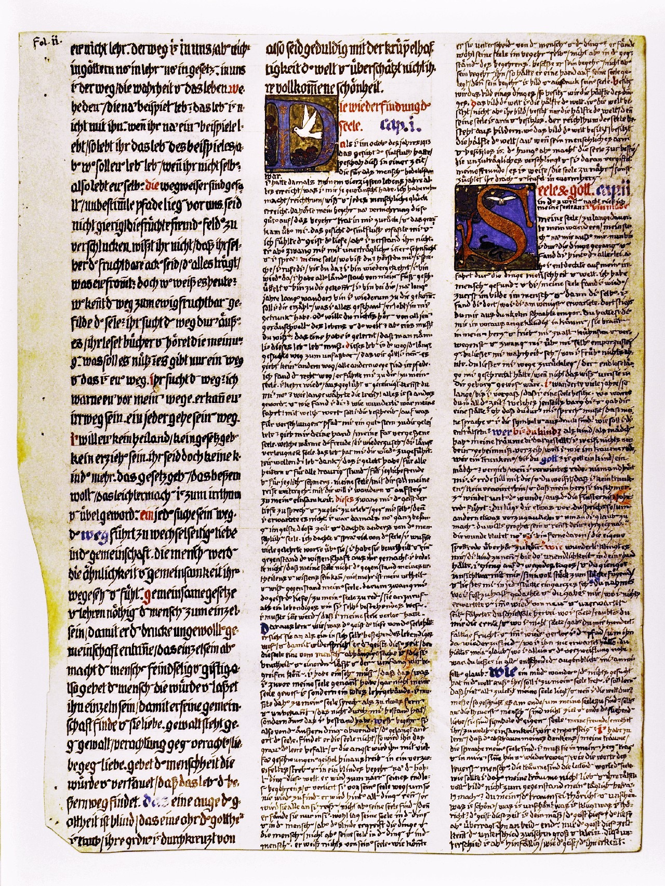

< Liber Primus
Chapter 2
Soul and God

HI ii(r) 245
cap. ii.
On the second night I called out to my soul:46
i am weary my soul,
my wandering has lasted too long,
my search for
myself
outside of
myself.
now i have gone through events
and find
you behind
all of them.
for i made discoveries on my erring
through events,
humanity,
and the world.
i found men.
and you, my soul, i found again,
first in images within men
and then
you
yourself.
i found you where i least expected you.
you climbed out of a dark shaft.
you announced yourself to me
in advance
in dreams.47
they burned in my heart and drove me
to all the boldest acts of daring,
and forced me to
rise
above myself.
you let me see Truths of which
i had no previous inkling.
you let me undertake journeys,
whose endless length would have scared me,
if the knowledge of them
had not been
secure in you.
i wandered
for
many
years,
so long
that i forgot
that i possessed
a soul.48
where were you all this time?
which Beyond sheltered you
and gave you sanctuary?
oh,
that you must speak through me,
that my speech and i
are your symbol and expression!
how should
i
decipher
you?
who are you, child?
my dreams have represented you
as a child and
as a maiden.49
i am ignorant
of your mystery.50
forgive me
if i speak
as in a dream,
like a drunkard--
are
you
God?
is God a child,
a maiden?51
forgive me if I babble.
no one else hears me.
i speak to you quietly
and you know that I am neither
a drunkard nor someone deranged,
and that my heart
twists in pain
from the wound,
whose darkness delivers
speeches full of mockery:
> you are lying to yourself!
> you spoke so as to deceive others
and make them believe in you.
> you want to be a prophet
and chase after your ambition.
the wound still bleeds,
and i am far from being able
to pretend
that i do not hear the mockery.
how strange it sounds to me
to call you a child,
you who still hold
the all-without-end in your hand.52
i went on the way
of the day
and you went invisibly
with me,
putting the together
pieces
meaningfully
and letting me see
the whole
in each part.
thinking recursively: (where/how/when) does a (structure/pattern) repeat itself at
(larger/smaller) scales? maybe related: interesting how the length of this say-poem is
forcing (variation/innovation) of (structure/pattern) in order to (maintain/refresh) the
interest of the reader; to retain attention, rather than perish. not unlike genes,
perhaps, forcing variations to increase chances of survival; to evolve, rather than perish.
you took away
where i thought to take hold,
and you gave me
where i did not expect anything
and time
and again
you brought about fate
from new and
unexpected quarters.
where i sowed,
you robbed me of the harvest,
and where i did not sow,
you give me fruit
a hundredfold.
and time
and again
i lost the path
and found it again
where i would never have
foreseen it.
you upheld my belief,
when I was alone
and near
despair.
at every decisive moment
you let me
believe
in myself.
[2]
Like a tired wanderer who had sought nothing in the world apart from her, shall I come
closer to my soul. I shall learn that my soul finally lies behind everything, and if I cross
the world, I am ultimately doing this to find my soul. Even the dearest are themselves not
the goal and end of the love that goes on seeking, they are symbols of their own souls.
My friends, do you guess to what solitude we ascend?
I must learn that the dregs of my thought, my dreams, are the speech of my soul. I must
carry them in my heart, and go back and forth over them in my mind, like the words of the
person dearest to me. Dreams are the guiding words of the soul. Why should I henceforth not
love my dreams and not make their fiddling images into objects of my daily consideration?
You think that the dream is foolish and ungainly. What is beautiful? What is ungainly? What
is clever? What is foolish? The spirit of this time is your measure, but the spirit of the
depths surpasses it at both ends. Only the spirit of this time knows the difference between
large and small. But this difference is invalid, like the spirit which recognizes it.
perhaps the spirit of the depths thinks recursively, then, where the fractal simply
repeats at scale. from this perspective, the varied dressings of different scales is
simply noise upon the endlessly-flowing depthwise recursion.

fol. ii(r) / ii(v)
The spirit of the depths even taught me to consider my action and my decision as dependent
on dreams. Dreams pave the way for life, and they determine you without you understanding
their language.53 One would like to learn this language, but
who can teach and learn it?
Scholarliness alone is not enough, there is a knowledge of the heart that gives deeper
insight.54 The knowledge of the heart is in no book and is
not to be found in the mouth of
any teacher, but grows out of you like the green seed from the dark earth. Scholarliness
belongs to the spirit of this time, but this spirit in no way grasps the dream, since the
soul is everywhere that scholarly knowledge is not.
But how can I attain the knowledge of the heart? You can attain this knowledge only by
living your life to the full. You live your life fully if you also live what you have never
yet lived, but have left for others to live or to think.55
You will say:
but i cannot live or think
everything that others live or think.
But you should say:
the life that i could still live,
i should live,
and the thoughts that i could still think,
i should think.
It appears as though you want to flee from yourself so as not to have to live what
remains unlived until now.56 But you cannot flee from
yourself. It is with you all the time and demands fulfillment. If you pretend to be blind
and dumb to this demand, you feign being blind and deaf to yourself. This way you will never
reach the knowledge of the heart.
The knowledge of your heart is how your heart is.
From a cunning heart you will know cunning.
From a good heart you will know goodness.
So that your understanding becomes perfect, consider that your
heart is both good and evil. You ask:
what?
should i also live evil?
The spirit of the depths demands:
the life that you could still live,
you should live.
well-being decides,
not your well-being,
not the well-being of the others,
but only well-being.
Well-being is between me and others, in society I, too, lived -- which I had not done
before, and which I could still do. I lived into the depths, and the depths began to speak.
The depths taught me the other truth. It thus united sense and nonsense in me.
I had to recognize that I an only the expression and symbol of the soul. In the sense of the
spirit of the depths, I am as I am in this visible world a symbol of my soul, and I am
thoroughly a serf completely subjugated, utterly obedient. The spirit of the depths taught
me to say:
i am the servant
of a child.
Through this dictum I learn above all the most extreme humility as what I most need.
The spirit of this time of course allowed me to believe in my reason. He let me see myself
in the image of a leader with ripe thoughts. But the spirit of the depths teaches me that I
am a servant, in fact the servant of a child. This dictum was repugnant to me and I hated
it. But I had to recognize and accept that my soul is a child and that my God in my soul is
a child.56
If you are boys, your God is a woman.
If you are women, your God is a boy.
If you are men, your God is a maiden.
The God is where you are not. So: it is wise that one has a God; this serves for your
perfection.
A maiden is the pregnant future.
A boy is the engendering future.
A woman is: having given birth.
A man is: having engendered.
So: if you are childlike beings now, your God will descend from the height of ripeness to
age and death.
But if you are developed beings, having engendered or given birth, in body or in soul, so
your God rises from the radiant cradle, to the incalculable height of the future, to the
maturity and fullness of the coming time.
He who still has his life before him is a child.
He who lives life in the present is developed.
If you thus live all that you can live, you are developed.
He who is a child in this time, his God dies.
He who is developed in this time, his God continues to live.
The spirit of the depths teaches this mystery.
Prosperous and woeful are those whose God is developed!
Prosperous and woeful are those whose God is a child!
What is better, that man has life ahead of him, or that God does? I know no answer. Live;
the unavoidable decides.
The spirit of the depths taught me that my life is encompassed by the divine child.58 From
his hand everything unexpected came to me, everything living. This child is
what I feel as an eternally springing youth in me.59
In childish men you feel the hopeless transience. All that you saw passing
is yet to come for him. His future is full of transience.
But the transience of the things coming toward you has never yet experienced a human
meaning.
Your continuing to live is a living onward. You engender and give birth to what is to come,
you are fecund, you live onward.
The childish is unfruitful, what is to come to him is what already has been
engendered and already withered. It does not live onward.60
My God is a child, so wonder not that the spirit of this time in me is incensed to mockery
and scorn. There will be no one who will laugh at me as I laughed at myself.
Your God should not be a man of mockery rather you yourself will be the man of mockery You
should mock yourself and rise above this. If you have still not learned this from the old
holy books, then go there, drink the blood and eat the flesh of him who was mocked61 and
tormented for the sake of our sins, so that you totally become his nature, deny his
being-apartffrom-you; you should be he himself, not Christians but Christ, otherwise you
will be of no use to the coming God.
Is there any one among you who believes he can be spared the way? Can he swindle his way
past the pain of Christ? I say:
such a one deceives himself to his own detriment.
he beds down on thorns and fire.
no one can be spared the way of Christ,
since this way leads to what is to come.
you should all
become Christs.62
You do not overcome the old teaching through doing less, but through doing more. Every step
closer to my soul excites the scornful laughter of my devils, those cowardly ear-whisperers
and poison-mixers. It was easy for them to laugh, since I had to do strange things.
-
45
In 1945, Jung commented on the symbolism of the bird and serpent in connection with
the tree, "The philosophical tree" (ch. 12, CW 13).
-
46
November 14, 1913.
-
47
The Draft continues: "which were dark to me, and which I sought to grasp in my own
inadequate way" (p. 18).
-
48
The Draft continues: "I belonged to men and things. I did not belong to myself" In
Black Book 2, Jung states that he wandered for eleven years (p. 19). He had stopped
writing in this book in 1902, taking it up again in the autumn of 1913.
-
49
Black Book 2 continues: ''And I found you again only through the soul of the woman"
(p. 8).
-
50
Black Book 2 continues: "Look, I bear a wound that is as yet not healed: my ambition
to malce an impression" (p. 8).
-
51
Black Book 2 continues: "I must tell myself most clearly: does He use the image of a
child that lives in every man's' soul? Were Horus, Tages, and Christ not children?
Dionysus and Heracles were also divine children. Did Christ, the God of man, not
call himself the son of man? What was his innermost thought in doing so? Should the
daughter ofman be God's name?" (p. 9).
-
52
The Draft continues: "How thick the earlier darkness was! How impetuous and how
egotistic my passion was, subjugated by all the daimonsof ambition, the desire for
glory, greed, uncharitableness, and zeal! How ignorant I was at the time! Life tore
me away, and I deliberately moved away from you and I have done so for all these
years. I recognize how good all of this was. But I thought that you were lost, even
though I sometimes thought that I was lost. But you were not lost. I went on the way
of the day. You went invisibly with me and guided me step by step, putting the
pieces together meaningfully" (pp. 20-21).
-
53
In 1912, Jung endorsed Maeder's notion of the prospective fiction of the dream (''An
attempt at an account of psychoanalytic theory," CW 4, §452). In a discussion in the
ZUrich Psychoanalytical Society on January 31,1913, Jlmg said: "The dream is not
only the fulfillment ofinfatltile desires, but also symbolizes the future ... The
dream provides the answer through the symbol, which one must understand" (MZS, p.
5). On the development ofJung's dream theory, see my]ung and the Making ofModern
Psychology: The Dream ofaScience, §2.
-
54
This echoes Blaise Pascal's famous statement, "The heart has its reasons of which
reason knows nothing" (yensees, 423 [London: Penguin, 1660/1995]' p. 127). Jung's
copy of Pascal's work contains a number of marginal marks.
-
55
In 1912, Jung argued that scholarliness was insufficient if one wanted to become a
"knower of the human soul." To do this, one had to "hang up exact science and put
away the scholar's gown, to say farewell to his study and wander with human heart
through the world, through the horror of prisons, mad houses and hospitals, through
drab suburban pubs, in brothels and gambling dens, through the salons of elegant
society, the stock exchanges, the socialist meetings, the churches, the revivals and
ecstasies of the sects, to experience love, hate and passion in every form in one's
body" ("New paths of psychology," cw 7, §409).
-
56
In 1931, Jung commented on the pathogenic consequences of the unlived life of
parents upon their children: "What usually has the strongest psychic effect on the
child is the life which the parents ... have not lived. This statement would be
rather too perfunctory and superficial ifwe did not add by way ofqualification: that
part of their lives which might have been lived had not certain somewhat threadbare
excuses prevented the parents from doing so" ("Introduction to Frances Wickes,
'Analyse der Kinderseele: " CW 17, §87).
-
57
In the 1925 seminar, Jung explained his thoughts at this time: "These ideas about
the anima and animus led me ever further afield into metaphysical problems, and more
things crept up for reexamination. At that time I was on the Kantian basis that
there were things that could never be solved and that therefore shouLd not be
speculated about, but it seemed to me that if I could find such definite ideas about
the anima, it was quite worthwhile to try to formulate a conception of God. But I
could arrive at nothing satisfactory and thought for a time that perhaps the anima
figure was the deity I said to myself that perhaps men had had a female God
originally, but growing tired of being governed by women, they had then overthrown
this God. I practically threw the whole metaphysical problem into the anima and
conceived of it as the dominating spirit of psyche. In this way I got into a
psychological argument with myself about the problem of God" (Analytical Psychology,
p. 46).
-
58
In 1940, Jung presented a study of the motif of the divine child in a collaborative
volume with the Hungarian classicist Karl Kérenyi (see "On the psychology of the
child archetype, CW 9, I). lung wrote that the child motif occurs frequently in the
individuation process. It does not represent one's literal childhood as is
emphasized by its mythological name. It compensates the residedness of consciousness
and paves the way for the future development of the personality In certain
conditions of conflict, the unconscious psyche produces a symbol that unites the
opposites. The child is such a symbol. It anticipates the self, which is produced
through the synthesis of the conscious and unconscious elements of the personality
The typical fates that befall the child indicate the kind of psychic events
accompanying the genesis of the self. The wonderful birth of the child indicates
that this happens psychically as opposed to physically.
-
59
In 1940, Jung wrote: "an essential aspect of the child motif is its futural
character. The child is potential future" ("On the psychology of the child
archetype," CW 9, I, §2.78l.
-
60
The Draft continues: "My friends, as you can see, mercy is granted to the developed,
not the childish. I thank my God for this message. Do not let the teachings of
Christianity deceive you! Its teachings are good for the most mature minds of bygone
time. Today it serves immature minds. Christianity no longer promises us grace, and
yet we still need mercy That which I tell you is the way of what is to come, my way
to mercy" (p. 27).
-
61
I.e., Christ. Cf. Jung, "Transformation symbolism in the mass" (1942, CW 11).
-
62
In Answer tojo Jung noted: "Through the indwelling of the third divine person in
man, namely the Holy Ghost, a christification of the many arises" (1952, CW II,
§758).
< Liber Primus